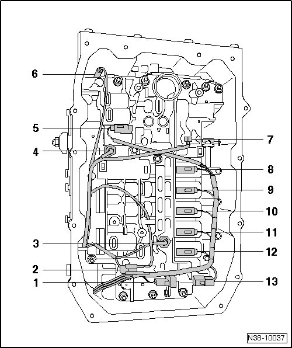

Valve Body: Description and Operation
Valve Body Assembly Overview
The valve body and/or the lines can be removed and installed with transmission either removed or installed.

1 Solenoid valve 2 (N89)
2 Connector for transmission output speed (RPM) sensor (G195)
• The sensor is located behind the valve body.
• Removing and installing, refer to --> [ Transmission Output Speed Sensor ] Service and Repair.
3 Automatic transmission hydraulic pressure sensor 2 (G194)
• Not on transmissions that were installed from 11.05.
• Allocation.
• Removing and installing, refer to --> [ Hydraulic Pressure Sensors 1 and 2 ] Service and Repair.
4 Automatic transmission hydraulic pressure sensor 1 (G193)
• Not on transmissions that were installed from 11.05.
• Allocation
• Removing and installing, refer to --> [ Hydraulic Pressure Sensors 1 and 2 ] Service and Repair.
5 Solenoid valve 4 (N91)
6 Transmission input speed (RPM) sensor (G182)
7 Transmission fluid temperature sensor (G93)
8 Solenoid valve 6 (N93)
9 Solenoid valve 3 (N90)
10 Solenoid valve 5 (N92)
11 Solenoid valve 10 (N283)
12 Solenoid valve 1 (N88)